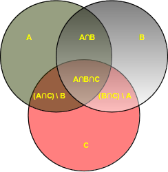

Sets and Frozensets
Introduction
 The philosopher Wittgenstein didn't like the set theory and complained mathematics is "ridden through and through with the pernicious idioms of set theory," He dismissed the set theory as "utter nonsense", as being "laughable" and "wrong". His criticism appeared years after the death of the German mathematician Georg Cantor, the founder of the set theory.Cantor defined a set at the beginning of his "Beiträge zur Begründung der transfiniten Mengenlehre":
"A set is a gathering together into a whole of definite, distinct objects of our perception and of our thought - which are called elements of the set." Nowadays, we can say in "plain" English: A set is a well defined collection of objects.
The elements or members of a set can be anything: numbers, characters, words, names, letters of the alphabet, even other sets, and so on. Sets are usually denoted with capital letters. This is not the exact methematical definition, but it is good enough for the following.
Sets in Python
The data tpye "set", which is a collection type, has been part of Python since version 2.4. A set contains an unordered collection of unique and immutable objects. The set data type is, as the name implies, a Python implementation of the sets as they are known from mathematics. This explains, why sets unlike lists or tuples can't have multiple occurrences of the same element.Creating Sets
If we want to create a set, we can call the built-in set function with a sequence or another iterable object.In the following example, a string is singularised into its characters to build the resulting set x:
>>> x = set("A Python Tutorial")
>>> x
set(['A', ' ', 'i', 'h', 'l', 'o', 'n', 'P', 'r', 'u', 't', 'a', 'y', 'T'])
>>> type(x)
<type 'set'>
>>>
We can pass a list to the built-in set function, as we can see in the following:
>>> x = set(["Perl", "Python", "Java"]) >>> x set(['Python', 'Java', 'Perl']) >>>
We want to show now, what happens, if we pass a tuple with reappearing elements to the set function - in our example the city "Paris":
>>> cities = set(("Paris", "Lyon", "London","Berlin","Paris","Birmingham"))
>>> cities
set(['Paris', 'Birmingham', 'Lyon', 'London', 'Berlin'])
>>>
As we have expected, no doublets are in the resulting set of cities.
Immutable Sets
Sets are implemented in a way, which doesn't allow mutable objects. The following example demonstrates, that we cannot include for example lists as elements:
>>> cities = set((("Python","Perl"), ("Paris", "Berlin", "London")))
>>> cities = set((["Python","Perl"], ["Paris", "Berlin", "London"]))
Traceback (most recent call last):
File "<stdin>", line 1, in <module>
TypeError: unhashable type: 'list'
>>>
Frozensets
Though sets can't contain mutable objects, sets are mutable:
>>> cities = set(["Frankfurt", "Basel","Freiburg"])
>>> cities.add("Strasbourg")
>>> cities
set(['Freiburg', 'Basel', 'Frankfurt', 'Strasbourg'])
>>>
Frozensets are like sets except, that they cannot be changed, i.e. they are immutable:
>>> cities = frozenset(["Frankfurt", "Basel","Freiburg"])
>>> cities.add("Strasbourg")
Traceback (most recent call last):
File "<stdin>", line 1, in <module>
AttributeError: 'frozenset' object has no attribute 'add'
>>>
Simplified Notation
We can define sets (since Python2.6) without using the built-in set function. We can use curly braces instead:
>>> adjectives = {"cheap","expensive","inexpensive","economical"}
>>> adjectives
set(['inexpensive', 'cheap', 'expensive', 'economical'])
>>>
Set Operations
add(element)
- A method which adds an element, which has to be immutable, to a set.
>>> colours = {"red","green"} >>> colours.add("yellow") >>> colours set(['green', 'yellow', 'red']) >>> colours.add(["black","white"]) Traceback (most recent call last): File "<stdin>", line 1, in <module> TypeError: unhashable type: 'list' >>>Of course, an element will only be added, if it is not already contained in the set. If it is already contained, the method call has no effect. clear()
- All elements will removed from a set.
>>> cities = {"Stuttgart", "Konstanz", "Freiburg"} >>> cities.clear() >>> cities set([]) >>> copy
-
Creates a shallow copy, which is returned.
>>> more_cities = {"Winterthur","Schaffhausen","St. Gallen"} >>> cities_backup = more_cities.copy() >>> more_cities.clear() >>> cities_backup set(['St. Gallen', 'Winterthur', 'Schaffhausen']) >>>
Just in case, you might think, an assignment might be enough:>>> more_cities = {"Winterthur","Schaffhausen","St. Gallen"} >>> cities_backup = more_cities >>> more_cities.clear() >>> cities_backup set([]) >>>The assignment "cities_backup = more_cities" just creates a pointer, i.e. another name, to the same data structure. difference()
-
This method returns the difference of two or more sets as a new set.
>>> x = {"a","b","c","d","e"} >>> y = {"b","c"} >>> z = {"c","d"} >>> x.difference(y) set(['a', 'e', 'd']) >>> x.difference(y).difference(z) set(['a', 'e']) >>>Instead of using the method difference, we can use the operator "-":>>> x - y set(['a', 'e', 'd']) >>> x - y - z set(['a', 'e']) >>>
difference_update()
-
The method difference_update removes all elements of another set from this set.
x.difference_update() is the same as "x = x - y"
>>> x = {"a","b","c","d","e"} >>> y = {"b","c"} >>> x.difference_update(y) >>> >>> x = {"a","b","c","d","e"} >>> y = {"b","c"} >>> x = x - y >>> x set(['a', 'e', 'd']) >>> discard(el)
- An element el will be removed from the set, if it is contained in the set.
If el is not a member of the set, nothing will be done.
>>> x = {"a","b","c","d","e"} >>> x.discard("a") >>> x set(['c', 'b', 'e', 'd']) >>> x.discard("z") >>> x set(['c', 'b', 'e', 'd']) >>> remove(el)
- works like discard(), but if el is not a member of the set, a KeyError will be
raised.
>>> x = {"a","b","c","d","e"} >>> x.remove("a") >>> x set(['c', 'b', 'e', 'd']) >>> x.remove("z") Traceback (most recent call last): File "<stdin>", line 1, in <module> KeyError: 'z' >>> intersection(s)
-
Returns the intersection of the instance set and the set s as a new set. In other
words: A set with all the elements which are contained in both sets is returned.
>>> x = {"a","b","c","d","e"} >>> y = {"c","d","e","f","g"} >>> x.intersection(y) set(['c', 'e', 'd']) >>>This can be abbreviated with the ampersand operator "&":>>> x = {"a","b","c","d","e"} >>> y = {"c","d","e","f","g"} >>> x.intersection(y) set(['c', 'e', 'd']) >>> >>> x = {"a","b","c","d","e"} >>> y = {"c","d","e","f","g"} >>> x & y set(['c', 'e', 'd']) >>> isdisjoint()
- This method returns True if two sets have a null intersection.
issubset()
-
x.issubset(y) returns True, if x is a subset of y. "<=" is an abbreviation for "Subset of" and ">="
for "superset of"
"<" is used to check if a set is a proper subset of a set.>>> x = {"a","b","c","d","e"} >>> y = {"c","d"} >>> x.issubset(y) False >>> y.issubset(x) True >>> x < y False >>> y < x # y is a proper subset of x True >>> x < x # a set can never be a proper subset of oneself. False >>> x <= x True >>> issuperset()
-
x.issuperset(y) returns True, if x is a superset of y. ">=" is an abbreviation for "issuperset of"
">" is used to check if a set is a proper superset of a set.
>>> x = {"a","b","c","d","e"} >>> y = {"c","d"} >>> x.issuperset(y) True >>> x > y True >>> x >= y True >>> x >= x True >>> x > x False >>> x.issuperset(x) True >>> pop()
- pop() removes and returns an arbitrary set element. The method raises a KeyError
if the set is empty
>>> x = {"a","b","c","d","e"} >>> x.pop() 'a' >>> x.pop() 'c'